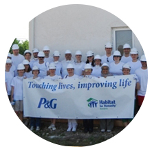

REDUCEREA RISCURILOR SI RASPUNS LA DEZASTRE
Expertiza Habitat for Humanity Romania in preventie si raspuns la dezastre
- 10 ani de experiente in analiza si combaterea riscului in comunitate si interventii in comunitatile afectate de dezastre
- Statut de Utilitate Publica, obtinut in 2008
- 10 judete, 42 de comunitati, 45.000 de beneficiari directi
- Parteneriat cu I.G.S.U., din 2011
- Directie strategica Habitat for Humanity Romania, sustinuta la nivel regional
DISASTER RISK REDUCTION AND RESPONSE IN ROMANIA
Inceput in 2005, programul Raspuns la Dezastre (Disaster Risk Reduction and Response (DRRR) are scopul de a reduce riscurile de dezastre in comunitate, prin analiza si combaterea riscurilor la care sunt suspuse familiile din comunitatile vulnerabile, si de a interveni in zonele afectate de dezastre naturale (inundatii, incendii, alunecari de teren, cutremure) si tehnologice.
Habitat for Humanity Romania, prin Statul de Utilitate Publica
obtinut in 2008 poate preula parte din responsabilitatile autoritatilor publice in probleme de raspuns la dezastre legate de preventie si reconstructie.
RASPUNS LA DEZASTRE
Habitat for Humanity Romania isi propune sa intervina imediat, din momentul zero al producerii unui dezastru, pe baza unui plan ce diminueaza pagubelor si eficientizeaza cosutrile. Cea mai vasta expertiza organizationala este pe raspuns la inundatii.
KITURI INTERVENTIE RAPIDA
Imediat dupa producerea inundatiilor, Habitat for Humanity Romania ofera oamenilor afectati de indunatii sprijin pentru vacuarea apei si malului din locuinta. Sunt distibuite kiturile de interventie rapida. Acestea contin roaba, ciocan, cuie, lopata, saci de nisip, folie de plastic.

KITURI DE CURATENIE
Impreuna cu parteneri corporate, cum este P&G, oferim sprijin victimelor prin distributia kitului de curatenie (produse de curatenie locuinta si ingrijire personala).
KITURI DE CURATENIE
Ulterior distribuirii de kitur, specialistii Habitat for Humanity Romania evalueaza padubele produse si recomanda tipul de interventii necesare.
ASISTENTA CU MATERIALE DE CONSTRUCTII
Oferim sprijin prin distributia de materiale de constructie necesare renovarii locuintelor afectate (ciment, caramida, parchet, morar, vopseluri, gips-carton).
RENOVARI SI REABILITARI
Lucram impreuna cu familiile in nevoie si voluntari la renovarea si reabilitarea locuintelor afectate de dezastre naturale si tehnologice.
RECONSTRUCTIE DUPA DEZASTRU
Impreuna cu victimele dezastrelor si cu voluntari din toate colturile lumii, lucram la reconstructia locuintelor afectate.